7 Translation into Intermediate Code 中间代码生成¶
参考资料：
- 姚培森老师2024~2025学年春夏ch7ppt
- wcjj的笔记
- 伟大的Gemini 2.5 pro deep research
7.1 中间表示概述¶
为什么需要IR？- 使用中间介质简化编译的路径种类：
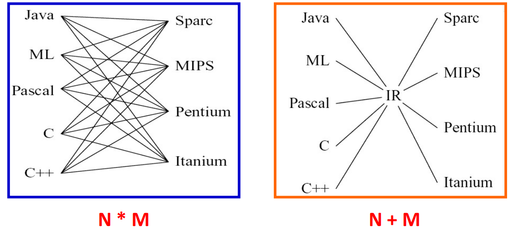
降低复杂性，提升复用性（hinders modularity, hinders portability）
三地址码 TAC
核心特点是每条指令最多只包含一个运算符和三个“地址”
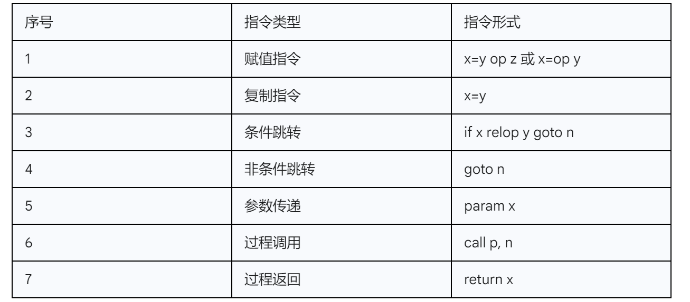
例子：
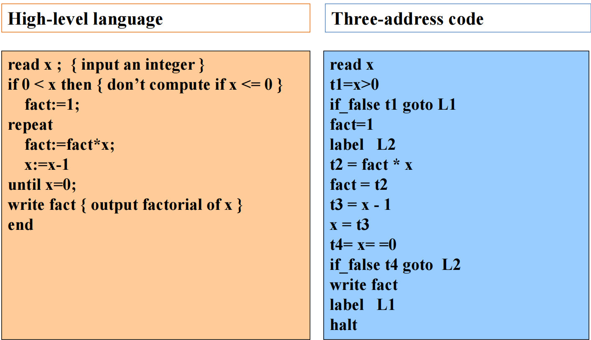
7.2 树形中间表示¶
中间表示在抽象语法树（AST）和底层汇编指令之间取得一个平衡点。一方面，它像AST一样保留了程序的层次化结构；另一方面，它的节点所代表的操作又非常接近于目标机器的指令，比如内存访问、二元运算等。
IR Tree由两大类节点构成
- 用于计算值的表达式（Expression, Exp）
- 用于执行动作的语句（Statement, Stmt）
文法描述：
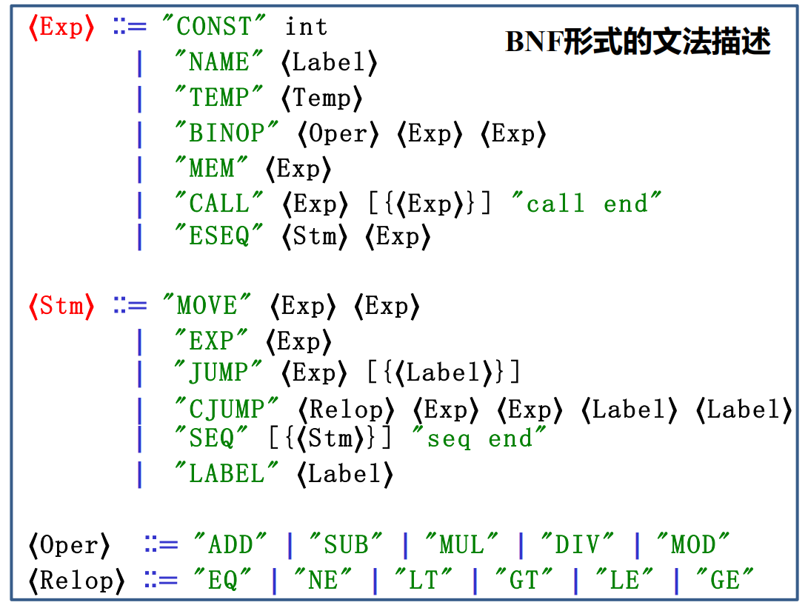
7.2.1 表达式¶
| 节点 (Node) | 功能描述 (Description) | 示例 (Example) |
|---|---|---|
| CONST(i) | 整数常量i | CONST(42) → 值为42 |
| NAME(n) | 符号常量n，通常是一个代码标签（Label），其值为该标签的内存地址 | NAME(L1) → 标签L1的地址 |
| TEMP(t) | 临时变量t，可以看作是一个虚拟寄存器，在寄存器分配前我们不关心其数量 | TEMP(t123) → 临时变量t123中存储的内容 |
| BINOP(o,e1,e2) | 对两个子表达式e1和e2应用二元操作o（如加减乘除、位运算等） | BINOP(PLUS, TEMP(t1), CONST(1)) → 计算 t1 + 1 |
| MEM(e) | 访问内存，e是一个计算地址的表达式，MEM节点既可以表示从内存加载数据（fetch），也可以表示向内存存储数据（store），MEM(e)在左边就是写，在右边就是取 |
MEM(TEMP(fp)) → 访问帧指针fp所指向地址的内存内容 |
| CALL(f,l) | 调用函数f，参数列表为l，f通常是一个NAME节点，l是Exp节点的列表 | CALL(NAME(print),[TEMP(t1)]) → 调用 print(t1) |
| ESEQ(s,e) | 顺序组合，先执行语句s（为了其副作用），然后计算表达式e并返回其结果 | ESEQ(MOVE(TEMP(t), CONST(1)), TEMP(t)) → (t=1; t)，整个表达式的结果是t的值，即1 |
ESEQ的理解和副作用：
-
s可能会影响e的结果，导致有时候不可交换 -
ESEQ解决了在一个以“表达式求值”为核心的树状结构中，如何优雅地嵌入“产生副作用的语句”
- 副作用（Side effects） 是指在计算表达式之外，对程序状态产生的任何可观察的改变，最常见的就是修改某个内存单元或临时变量（寄存器）的值
- a=5这个赋值操作，其主要目的就是产生副作用（改变a的值），它本身不返回值
- ESEQ(s, e)的语义是：先执行语句s，s的执行是为了其副作用，s本身不返回值。执行完s后，再计算表达式e，整个ESEQ节点的值就是e的值
- 例如，ESEQ(MOVE(TEMP(a), CONST(5)), BINOP(PLUS, TEMP(a), CONST(5)))，会先执行MOVE语句使a的值变为5，然后计算a+5，最终整个表达式的结果是10
7.2.2 语句¶
用于执行动作、改变状态或控制程序的执行流程，它们本身不返回任何值
| 节点 (Node) | 功能描述 (Description) | 示例 (Example) |
|---|---|---|
| MOVE(d,s) | 将源表达式s计算出的值，移动到目标位置d；d通常是TEMP或MEM节点，如果是MEM节点，表达式通常为MOVE(MEM(e1), e2)形式 - 计算e1，得到地址a，再计算e2，放入地址a | MOVE(TEMP(t1), CONST(42)) → t1 = 42 |
| EXP(e) | 计算表达式e，但完全忽略并丢弃其计算结果，这通常是为了利用e的副作用 | EXP(CALL(NAME(print),...)) → 调用print()函数，不关心其返回值，只为了其打印效果 |
| JUMP(e,labs) | 无条件跳转，跳转到由表达式e计算出的地址，e通常是一个NAME节点 | JUMP(NAME(L1), [L1]) → goto L1 |
| CJUMP(o,e1,e2,t,f) | 条件跳转，比较e1和e2（使用关系操作o），如果结果为真，则跳转到标签t；否则，跳转到标签f | CJUMP(LT, TEMP(t1), CONST(0), L1, L2) → if t1 < 0 goto L1 else goto L2 |
| SEQ(s1,s2) | 语句序列，按顺序先执行语句s1，然后执行语句s2 | SEQ(MOVE(...), JUMP(...)) → 先执行一个赋值语句，再执行一个跳转语句 |
| LABEL(n) | 定义标签，将符号名n的值定义为当前指令在内存中的地址，它作为跳转指令的目标。 | LABEL(L1) → 定义一个名为L1的标签，相当于汇编中的 L1: |
Name是使用这个symbol，比如goto .L，而Label是定义这个symbol，即.L
7.2.3 例子¶
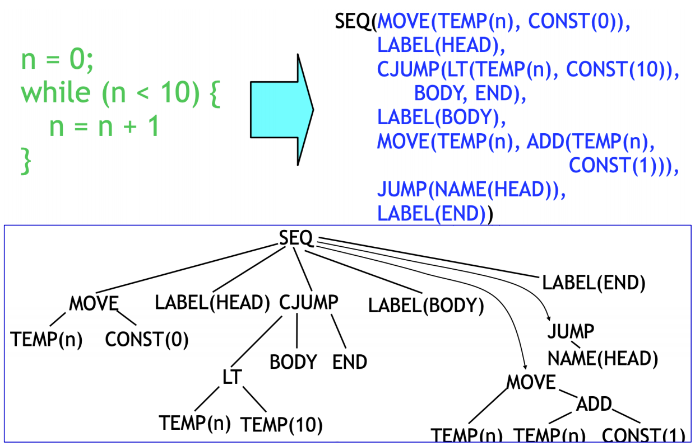
- 最外层的
SEQ节点将整个代码块串联起来 MOVE(TEMP(n), CONST(0))：对应循环前的初始化n := 0LABEL(HEAD)：定义了循环开始的标签，作为循环判断和返回的锚点CJUMP(LT, TEMP(n), CONST(10), BODY, END)：这是循环的核心判断。如果n < 10为真，跳转到BODY标签；否则，跳转到END标签，退出循环LABEL(BODY)：定义了循环体的入口MOVE(TEMP(n), BINOP(ADD, TEMP(n), CONST(1)))：这是循环体的内容，对应n := n + 1JUMP(NAME(HEAD))：循环体执行完毕后，无条件跳转回HEAD标签，进行下一次循环判断LABEL(END)：定义了循环结束后的代码位置
7.3 翻译到IR Trees¶
我们的翻译以tiger文法为例：
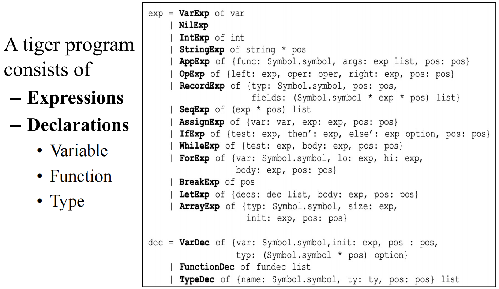
7.3.1 翻译框架¶
我们将AST表达式分为以下三类：
Ex- 一个能够计算出结果值的表达式- 它应该被翻译成一个
Tree.exp节点 - 例如
a + b
- 它应该被翻译成一个
Nx- 一个不产生任何结果值的语句- 它应该被翻译成一个
Tree.stmt节点 - 例如赋值语句
a := b或一个while循环
- 它应该被翻译成一个
Cx- 一个用于控制流程的条件表达式- 它不直接计算出0或1，而是被翻译成一个能够根据条件真假跳转到不同目标标签的
Tree.stm - 最典型的例子就是
CJUMP
- 它不直接计算出0或1，而是被翻译成一个能够根据条件真假跳转到不同目标标签的
转换：例如，当if语句需要一个条件（Cx），而我们提供了一个x+1（Ex）时，Ex -> Cx的转换会自动将x+1的结果与0比较，生成一个CJUMP。反之，当赋值语句需要一个值（Ex），而我们提供了一个x>0（Cx）时，Cx -> Ex的转换会生成一段代码，使用一个临时变量，当条件为真时给它赋值1，为假时赋值0，最后返回这个临时变量。
7.3.2 翻译简单变量和数据结构¶
简单变量访问
在函数中访问一个局部变量，实际上是访问它在当前函数栈帧（Stack Frame中的存储位置，我们通过一个特殊的寄存器——帧指针（Frame Pointer, fp）来定位当前的栈帧。
因此，访问一个距离帧指针偏移量为k的局部变量v，其IR Tree表示为 ：
\(MEM(BINOP(PLUS,TEMP(fp),CONST(k)))\)
这棵树的含义是：取fp寄存器的值，加上常量偏移k，得到变量的实际内存地址，然后通过MEM节点访问该地址的内容。
静态链接：
对于支持嵌套函数的语言，一个内部函数可能需要访问定义在外部函数中的变量，这通过静态链接（Static Link）实现。访问一个嵌套层级为n的变量，需要沿着静态链进行n次解引用，其IR Tree会形成一个嵌套的MEM结构：
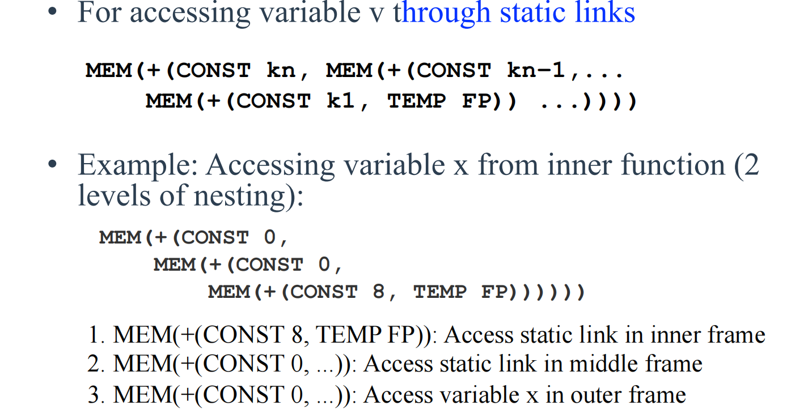
这表示从当前帧指针fp开始，首先找到指向外层函数栈帧的静态链接，然后一层层回溯，直到找到目标变量所在的栈帧，最后加上变量在该帧内的偏移量k_x来访问它。
R值与L值 (R-Values and L-Values)
- R值 (R-value)：指表达式的“值”，通常出现在赋值号的右边，如
a+3。它是一个可以被计算但不能被赋值的量。 - L值 (L-value)：指一个可被赋值的“内存位置”，通常出现在赋值号的左边，如变量
x、数组元素a[i]。它也可以出现在右边，此时表示该位置存储的“内容”。
在IR Tree中，MEM节点的角色由其上下文决定：
- 当作为
MOVE(d, s)语句的目标d时，MEM(...)代表一个L值，表示要向这个内存地址存入（Store）数据 - 当出现在其他任何地方时，
MEM(...)代表一个R值，表示要从这个内存地址取出（Fetch/Load）数据
不同语言对L值的处理方式有很大差异：
- 标量L值 (Scalar L-value)：L值所代表的内存位置只包含一个不可再分的数据单元（如一个整数或一个指针）。Tiger语言的设计极大地简化了翻译，因为它规定所有变量都是标量。数组和记录变量本身只存储一个指针，这个指针是标量。
- 结构化L值 (Structured L-value)：L值代表一块包含多个组成部分的内存区域，例如C语言中的结构体或Pascal中的数组。对结构化L值的赋值（如
struct1 = struct2）意味着要拷贝整个数据结构的内容，而不仅仅是一个指针。
Tiger的“一切皆为标量指针”的设计哲学，意味着赋值操作永远是简单的单字（word-sized）拷贝，MEM(e)足以完成所有访存操作。而对于支持结构化L值的语言，编译器在生成IR时必须考虑数据的大小和对齐，可能需要生成特殊的块拷贝（block move）指令。
算术运算
算术运算的翻译相对直接：
- 二元运算：源语言中的加减乘除等二元运算符，直接映射到
BINOP(op, e1, e2)节点 - 一元运算：IR Tree中没有专门的一元运算节点，一元运算需要被转换为等价的二元运算
- 一元取负
-x被翻译为BINOP(MINUS, CONST(0), e_x)，即0 - x - 一元按位取反
~x被翻译为BINOP(XOR, e_x, CONST(-1))，即x XOR 0xFF..FF
- 一元取负
数组下标a[i]访问
数组和记录变量本身都是指针，访问数组元素a[i]需要两步：首先获取数组的基地址，然后计算元素的偏移地址。其IR Tree结构如下：
\(MEM(BINOP(PLUS,MEM(e_a),BINOP(MUL,e_i,CONST(W))))\)
解释：
e_a是表示变量a的表达式，通常是MEM(+(TEMP(fp), CONST(k_a)))MEM(e_a)：第一次MEM访问。这是为了解引用指针，获取存储在变量a中的值，也就是数组在堆上的基地址e_i是计算索引i的表达式BINOP(MUL, e_i, CONST(W))：计算索引偏移。将索引i乘以每个元素的大小W（Word size，例如4字节）BINOP(PLUS,...)：将基地址和索引偏移相加，得到目标元素的最终内存地址- 最外层的
MEM(...)：第二次MEM访问。访问上一步计算出的最终地址，获取或存入元素的值
记录字段r.f访问
记录字段的访问与数组类似，但偏移量是固定的。如果字段f是记录的第n个字段（从0开始），其偏移量就是n * W。翻译结果为 ：
\(MEM(BINOP(PLUS,MEM(e_r),CONST(n∗W)))\)
这里的MEM(e_r)同样是用于获取记录在堆上的基地址。
7.3.3 翻译控制流相关语句¶
if-else语句
一个if test then stmt1 else stmt2语句会被翻译成如下结构的IR Tree ：
1 2 3 4 5 6 7 | |
解释：
CJUMP(...)：对test表达式进行翻译，生成条件跳转。如果为真，跳到t标签（then分支的入口）；如果为假，跳到f标签（else分支的入口）LABEL(t)和stm1：then分支的代码JUMP(NAME(join))：then分支执行完毕后，无条件跳转到join标签，跳过else分支LABEL(f)和stm2：else分支的代码LABEL(join)：then和else分支的汇合点，程序从这里继续往下执行
逻辑运算符的短路求值
- AND： 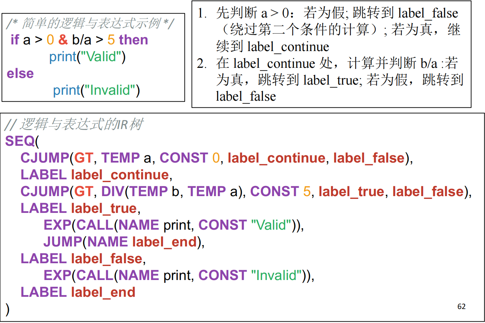
- OR： 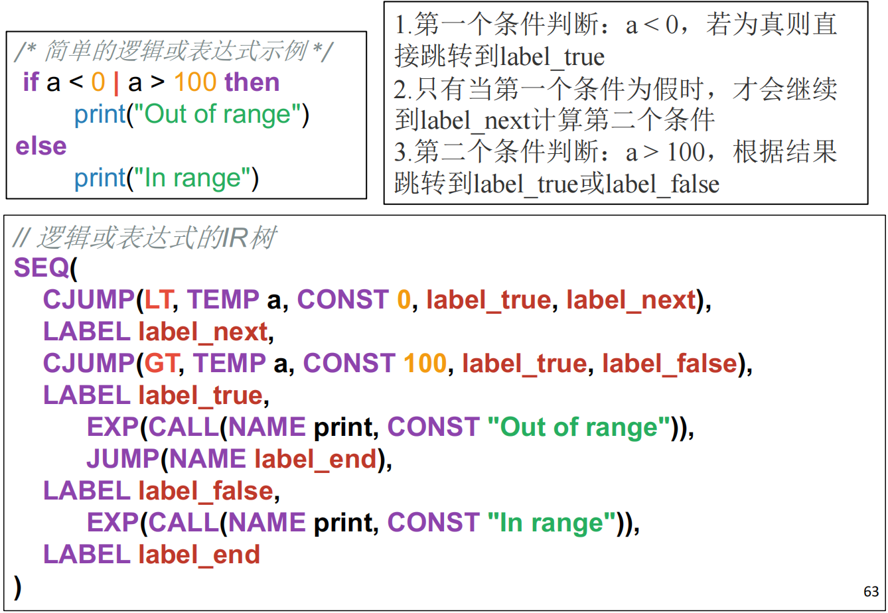
while循环
基本框架：
1 2 3 4 5 6 | |
LABEL(test)：循环判断的入口CJUMP(...)：对循环条件进行判断，若为真跳到body，否则跳到done退出循环LABEL(body)和body_stm：循环体的代码JUMP(NAME(test))：循环体执行完后，无条件跳回test进行下一次判断LABEL(done)：循环的出口
有break则直接跳转到done
例子：
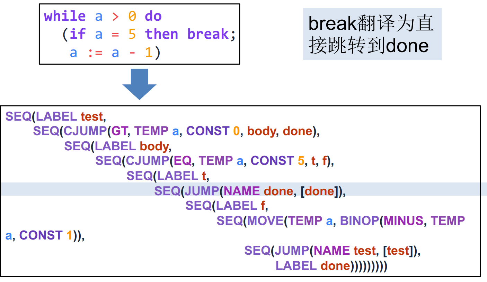
for循环
转换为while循环
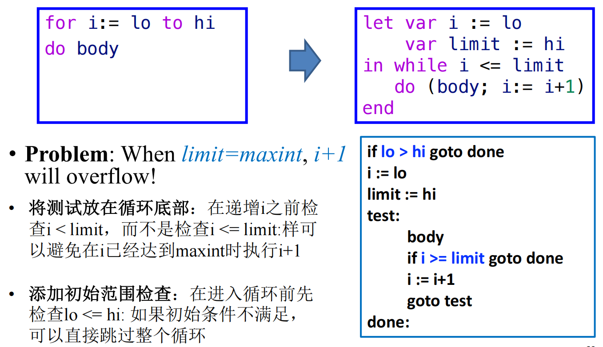
7.3.4 函数翻译¶
函数调用
翻译一个函数调用f(a1,..., an)，除了要处理所有参数表达式的求值外，一个关键点是处理支持嵌套函数所必需的静态链接（Static Link），翻译结果为：
\(CALL(NAME(l_f),[sl,a_1,...,a_n])\)
- 这里的
sl就是静态链接 - 它是一个隐藏的、额外的参数，指向调用者的静态父级函数的栈帧
- 当一个内层函数需要访问外层函数中定义的非局部变量时，它就通过静态链接（以及可能由多个静态链接组成的静态链）逐层回溯，找到定义该变量的栈帧，并从中读取数据
函数声明
- 序言 (Prologue)：函数开始执行前的一系列准备工作
- 放置函数标签，使其可以被调用
- 调整栈指针（
sp），为当前函数分配新的栈帧 - 将返回地址、旧的帧指针（
fp）以及任何需要由被调用者保存的寄存器（callee-save registers）压入栈中，以便函数返回时恢复 - 处理传入的参数，包括将静态链接保存到当前栈帧的特定位置
- 函数体 (Body)：这是函数的核心逻辑。我们将函数内的表达式（在Tiger中，函数体就是一个表达式）翻译成IR Tree 。
- 尾声 (Epilogue)：函数返回前的一系列清理工作
- 将函数的返回值（如果有的话）移动到约定的返回值寄存器中（如
eax） - 从栈中恢复之前保存的被调用者保存寄存器、旧的帧指针和返回地址
- 重置栈指针，释放当前函数的栈帧
- 执行返回指令，跳转到之前保存的返回地址，将控制权交还给调用者
- 将函数的返回值（如果有的话）移动到约定的返回值寄存器中（如